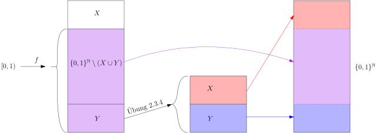
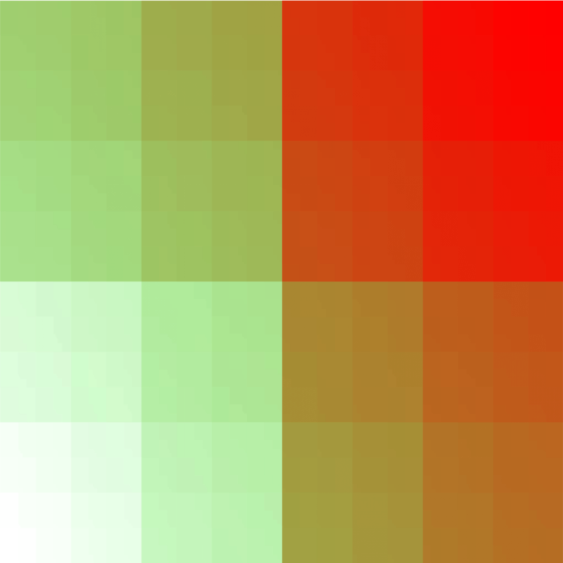
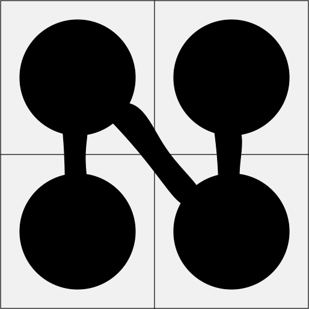
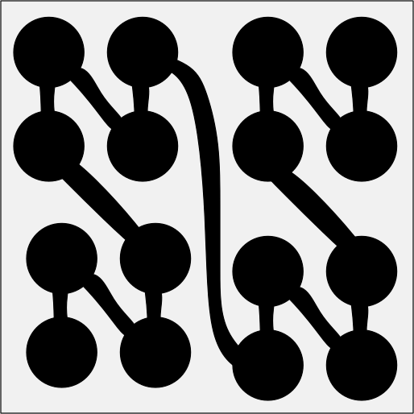
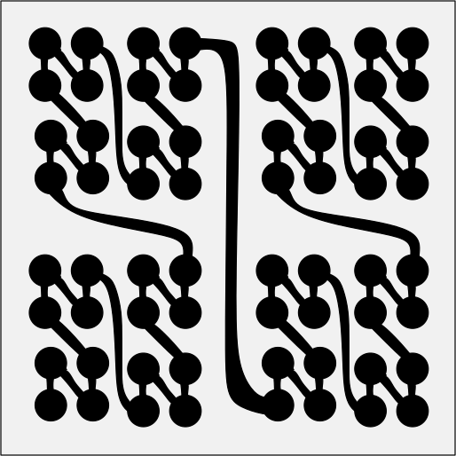
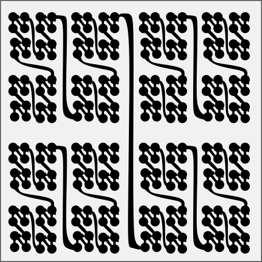
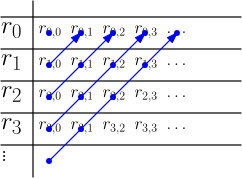
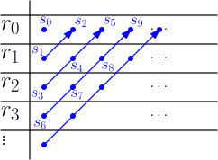

3.3 Mengen, die so groß wie ./course1/wly/03/03-sets-like-R.wly:2:11$\R$./course1/wly/03/03-sets-like-R.wly:2:35 sind./course1/wly/03/03-sets-like-R.wly:2:39
3.3 Mengen, die so groß wie ./course1/wly/03/03-sets-like-R.wly:2:11$\R$./course1/wly/03/03-sets-like-R.wly:2:35 sind./course1/wly/03/03-sets-like-R.wly:2:39
Im letzten Kapitel haben wir viele Mengen kennengelernt,./course1/wly/03/03-sets-like-R.wly:4:5 die abzählbar unendlich sind, also gleichmächtig mit ./course1/wly/03/03-sets-like-R.wly:5:5$\N$./course1/wly/03/03-sets-like-R.wly:5:58../course1/wly/03/03-sets-like-R.wly:5:62 ./course1/wly/03/03-sets-like-R.wly:5:62 Hier werden wir nun erkunden, welche Mengen gleichmächtig./course1/wly/03/03-sets-like-R.wly:6:5 mit ./course1/wly/03/03-sets-like-R.wly:7:5$\R$./course1/wly/03/03-sets-like-R.wly:7:9 sind. In der mathematischen Fachsprache sagt man:./course1/wly/03/03-sets-like-R.wly:7:13 sie haben die ./course1/wly/03/03-sets-like-R.wly:8:5Kardinalität des Kontinuums./course1/wly/03/03-sets-like-R.wly:8:20../course1/wly/03/03-sets-like-R.wly:8:48 Das Wort./course1/wly/03/03-sets-like-R.wly:8:48 ./course1/wly/03/03-sets-like-R.wly:9:5Kardinalität./course1/wly/03/03-sets-like-R.wly:9:6 steht hier für ./course1/wly/03/03-sets-like-R.wly:9:19Anzahl der Elemente./course1/wly/03/03-sets-like-R.wly:9:36 (bzw../course1/wly/03/03-sets-like-R.wly:9:56 den Größenbegriff bei unendlichen Mengen), und ./course1/wly/03/03-sets-like-R.wly:10:5Kontinuum./course1/wly/03/03-sets-like-R.wly:10:53 ./course1/wly/03/03-sets-like-R.wly:10:63 steht für ./course1/wly/03/03-sets-like-R.wly:11:5die reellen Zahlen./course1/wly/03/03-sets-like-R.wly:11:16../course1/wly/03/03-sets-like-R.wly:11:35 Im nächsten Kapitel werden./course1/wly/03/03-sets-like-R.wly:11:35 wir zeigen, dass es "echt mehr" reelle Zahlen gibt als./course1/wly/03/03-sets-like-R.wly:12:5 natürliche; dass also ./course1/wly/03/03-sets-like-R.wly:13:5$\R$./course1/wly/03/03-sets-like-R.wly:13:27 nicht abzählbar ist. Aber eins./course1/wly/03/03-sets-like-R.wly:13:31 nach dem anderen../course1/wly/03/03-sets-like-R.wly:14:5
Beobachtung 3.3.1./course1/wly/03/03-sets-like-R.wly:16:5 ./course1/wly/03/03-sets-like-R.wly:16:5 Es gilt ./course1/wly/03/03-sets-like-R.wly:17:9$\R \approx (0,1)$./course1/wly/03/03-sets-like-R.wly:17:17,./course1/wly/03/03-sets-like-R.wly:17:35 wobei ./course1/wly/03/03-sets-like-R.wly:17:35$(0,1)$./course1/wly/03/03-sets-like-R.wly:17:43 das offene./course1/wly/03/03-sets-like-R.wly:17:50 Einheitsintervall ist../course1/wly/03/03-sets-like-R.wly:18:9
Beweis Wir können eine Bijektion explizit hinschreiben:./course1/wly/03/03-sets-like-R.wly:21:9
Mit etwas reeller Analysis kann man nun zeigen:./course1/wly/03/03-sets-like-R.wly:28:9
$f$./course1/wly/03/03-sets-like-R.wly:32:17 ist stetig../course1/wly/03/03-sets-like-R.wly:32:20
$f$./course1/wly/03/03-sets-like-R.wly:35:17 ist streng monoton (z.B. weil ./course1/wly/03/03-sets-like-R.wly:35:20$f'(x) \gt 0$./course1/wly/03/03-sets-like-R.wly:35:51 gilt)../course1/wly/03/03-sets-like-R.wly:35:64
$\lim_{x \rightarrow -\infty} f(x) = 0$./course1/wly/03/03-sets-like-R.wly:38:17 und./course1/wly/03/03-sets-like-R.wly:38:56 ./course1/wly/03/03-sets-like-R.wly:39:17$\lim_{x \rightarrow \infty} f(x) = 1$./course1/wly/03/03-sets-like-R.wly:39:17 ../course1/wly/03/03-sets-like-R.wly:39:55
Und somit ist ./course1/wly/03/03-sets-like-R.wly:41:9$f$./course1/wly/03/03-sets-like-R.wly:41:23 eine Bijektion von ./course1/wly/03/03-sets-like-R.wly:41:26$\R$./course1/wly/03/03-sets-like-R.wly:41:46 auf den./course1/wly/03/03-sets-like-R.wly:41:50 Wertebereich von ./course1/wly/03/03-sets-like-R.wly:42:9$f$./course1/wly/03/03-sets-like-R.wly:42:26,./course1/wly/03/03-sets-like-R.wly:42:29 also ./course1/wly/03/03-sets-like-R.wly:42:29$(0,1)$./course1/wly/03/03-sets-like-R.wly:42:36../course1/wly/03/03-sets-like-R.wly:42:43A\(\square\)
Übungsaufgabe 3.3.1./course1/wly/03/03-sets-like-R.wly:44:5 ./course1/wly/03/03-sets-like-R.wly:44:5 Zeigen Sie ./course1/wly/03/03-sets-like-R.wly:45:9$\R \approx \R^+$./course1/wly/03/03-sets-like-R.wly:45:20../course1/wly/03/03-sets-like-R.wly:45:37
Übungsaufgabe 3.3.2./course1/wly/03/03-sets-like-R.wly:47:5 ./course1/wly/03/03-sets-like-R.wly:47:5 Zeigen Sie, dass ./course1/wly/03/03-sets-like-R.wly:48:9$\R_0^+ \approx \R^+$./course1/wly/03/03-sets-like-R.wly:48:26 gilt. Sie müssen./course1/wly/03/03-sets-like-R.wly:48:47 "die 0 verschwinden lassen"../course1/wly/03/03-sets-like-R.wly:49:9
Übungsaufgabe 3.3.3./course1/wly/03/03-sets-like-R.wly:51:5 ./course1/wly/03/03-sets-like-R.wly:51:5 Zeigen Sie, dass ./course1/wly/03/03-sets-like-R.wly:53:9$[0,1]$./course1/wly/03/03-sets-like-R.wly:53:26,./course1/wly/03/03-sets-like-R.wly:53:33 ./course1/wly/03/03-sets-like-R.wly:53:33$[0,1)$./course1/wly/03/03-sets-like-R.wly:53:35,./course1/wly/03/03-sets-like-R.wly:53:42 ./course1/wly/03/03-sets-like-R.wly:53:42$(0,1]$./course1/wly/03/03-sets-like-R.wly:53:44 und ./course1/wly/03/03-sets-like-R.wly:53:51$(0,1)$./course1/wly/03/03-sets-like-R.wly:53:56 ./course1/wly/03/03-sets-like-R.wly:53:63 alle gleichmächtig sind../course1/wly/03/03-sets-like-R.wly:54:9
Wir führen nun eine neue Notation ein: ./course1/wly/03/03-sets-like-R.wly:56:5$\{0,1\}^{\N}$./course1/wly/03/03-sets-like-R.wly:56:44 ist./course1/wly/03/03-sets-like-R.wly:56:58 die Menge aller unendlichen Folgen von ./course1/wly/03/03-sets-like-R.wly:57:5$0$./course1/wly/03/03-sets-like-R.wly:57:44 und ./course1/wly/03/03-sets-like-R.wly:57:47$1$./course1/wly/03/03-sets-like-R.wly:57:52../course1/wly/03/03-sets-like-R.wly:57:55 Formal./course1/wly/03/03-sets-like-R.wly:57:55 gesehen bezeichnet man für zwei Mengen ./course1/wly/03/03-sets-like-R.wly:58:5$A$./course1/wly/03/03-sets-like-R.wly:58:44 und ./course1/wly/03/03-sets-like-R.wly:58:47$B$./course1/wly/03/03-sets-like-R.wly:58:52 mit der./course1/wly/03/03-sets-like-R.wly:58:55 Notation ./course1/wly/03/03-sets-like-R.wly:59:5$A^B$./course1/wly/03/03-sets-like-R.wly:59:14 die Menge aller Funktionen./course1/wly/03/03-sets-like-R.wly:59:19 ./course1/wly/03/03-sets-like-R.wly:60:5$\phi : B \rightarrow A$./course1/wly/03/03-sets-like-R.wly:60:5../course1/wly/03/03-sets-like-R.wly:60:29 Ein Element aus ./course1/wly/03/03-sets-like-R.wly:60:29$\{0,1\}^{\N}$./course1/wly/03/03-sets-like-R.wly:60:47 ./course1/wly/03/03-sets-like-R.wly:60:61 wäre demnach eien Funktion ./course1/wly/03/03-sets-like-R.wly:61:5$\phi : \N \rightarrow \{0,1\}$./course1/wly/03/03-sets-like-R.wly:61:32../course1/wly/03/03-sets-like-R.wly:61:63 ./course1/wly/03/03-sets-like-R.wly:61:63 Diese Objekte entsprechen genau den unendlichen./course1/wly/03/03-sets-like-R.wly:62:5 ./course1/wly/03/03-sets-like-R.wly:63:5$0/1$./course1/wly/03/03-sets-like-R.wly:63:5-Folgen,./course1/wly/03/03-sets-like-R.wly:63:10 nämlich ./course1/wly/03/03-sets-like-R.wly:63:10$\phi(0)\phi(1)\phi(2)\phi(3)\dots$./course1/wly/03/03-sets-like-R.wly:63:27../course1/wly/03/03-sets-like-R.wly:63:62 ./course1/wly/03/03-sets-like-R.wly:63:62 Der Unterschied ist rein syntaktisch. Es ist allerdings./course1/wly/03/03-sets-like-R.wly:64:5 bequemer, sich ein ./course1/wly/03/03-sets-like-R.wly:65:5$\phi \in \{0,1\}^{\N}$./course1/wly/03/03-sets-like-R.wly:65:24 als unendliche./course1/wly/03/03-sets-like-R.wly:65:47 ./course1/wly/03/03-sets-like-R.wly:66:5$0/1$./course1/wly/03/03-sets-like-R.wly:66:5-Folge./course1/wly/03/03-sets-like-R.wly:66:10 vorzustellen../course1/wly/03/03-sets-like-R.wly:66:10
Theorem 3.3.2./course1/wly/03/03-sets-like-R.wly:68:5 ./course1/wly/03/03-sets-like-R.wly:68:5 ./course1/wly/03/03-sets-like-R.wly:70:9$\R \approx \{0,1\}^{\N}$./course1/wly/03/03-sets-like-R.wly:70:9../course1/wly/03/03-sets-like-R.wly:70:34
Beweis Die Beweisidee ist einfach, allerdings gehen erst einmal./course1/wly/03/03-sets-like-R.wly:73:9 ein paar Dinge schief, die man wieder flicken muss. Da laut./course1/wly/03/03-sets-like-R.wly:74:9 ./course1/wly/03/03-sets-like-R.wly:75:9Übungsaufgabe 3.3.3 ./course1/wly/03/03-sets-like-R.wly:75:9 ./course1/wly/03/03-sets-like-R.wly:76:9$\R \approx [0,1)$./course1/wly/03/03-sets-like-R.wly:76:9 gilt, reicht es, eine Bijektion./course1/wly/03/03-sets-like-R.wly:76:27 ./course1/wly/03/03-sets-like-R.wly:77:9$f : [0,1) \rightarrow \{0,1\}^{\N}$./course1/wly/03/03-sets-like-R.wly:77:9 zu konstruieren. So./course1/wly/03/03-sets-like-R.wly:77:45 geht's: Jede Zahl ./course1/wly/03/03-sets-like-R.wly:78:9$0 \leq x \lt 1$./course1/wly/03/03-sets-like-R.wly:78:27 lässt sich als./course1/wly/03/03-sets-like-R.wly:78:43 (unendliche) Binärzahl ./course1/wly/03/03-sets-like-R.wly:79:9$(x)_2$./course1/wly/03/03-sets-like-R.wly:79:32 schreiben, beispielsweise./course1/wly/03/03-sets-like-R.wly:79:39
Wir erhalten nun unsere unendliche ./course1/wly/03/03-sets-like-R.wly:85:9$0/1$./course1/wly/03/03-sets-like-R.wly:85:44-Folge,./course1/wly/03/03-sets-like-R.wly:85:49 indem wir./course1/wly/03/03-sets-like-R.wly:85:49 die führende Null und den Punkt abschneiden:./course1/wly/03/03-sets-like-R.wly:86:9 ./course1/wly/03/03-sets-like-R.wly:87:9$f(1/3) = 010101\dots$./course1/wly/03/03-sets-like-R.wly:87:9../course1/wly/03/03-sets-like-R.wly:87:31 Das geht für jede Zahl in ./course1/wly/03/03-sets-like-R.wly:87:31$[0,1)$./course1/wly/03/03-sets-like-R.wly:87:59:./course1/wly/03/03-sets-like-R.wly:87:66
$f(1/2) = 100000\dots$./course1/wly/03/03-sets-like-R.wly:89:9,./course1/wly/03/03-sets-like-R.wly:89:31 ./course1/wly/03/03-sets-like-R.wly:89:31$f(1/4) = 010000\dots$./course1/wly/03/03-sets-like-R.wly:89:33../course1/wly/03/03-sets-like-R.wly:89:55 Die./course1/wly/03/03-sets-like-R.wly:89:55 konstruierte Funktion ./course1/wly/03/03-sets-like-R.wly:90:9$f$./course1/wly/03/03-sets-like-R.wly:90:31 ist injektiv: zwei verschiedene./course1/wly/03/03-sets-like-R.wly:90:34 ./course1/wly/03/03-sets-like-R.wly:91:9$0 \leq x \lt y \lt 1$./course1/wly/03/03-sets-like-R.wly:91:9 haben verschiedene Binärdarstellung./course1/wly/03/03-sets-like-R.wly:91:31 und werden somit zu zwie verschiedenen ./course1/wly/03/03-sets-like-R.wly:92:9$0/1$./course1/wly/03/03-sets-like-R.wly:92:48-Folgen../course1/wly/03/03-sets-like-R.wly:92:53 ./course1/wly/03/03-sets-like-R.wly:92:53 Leider ist sie nicht surjektiv: die Binärdarstellung einer./course1/wly/03/03-sets-like-R.wly:93:9 reellen Zahl hört nie mit ./course1/wly/03/03-sets-like-R.wly:94:9$11111\dots$./course1/wly/03/03-sets-like-R.wly:94:35 auf. Statt./course1/wly/03/03-sets-like-R.wly:94:47 ./course1/wly/03/03-sets-like-R.wly:95:9$0.001111111\dots$./course1/wly/03/03-sets-like-R.wly:95:9 würden wir einfach ./course1/wly/03/03-sets-like-R.wly:95:27$0.0100000\dots$./course1/wly/03/03-sets-like-R.wly:95:47 ./course1/wly/03/03-sets-like-R.wly:95:63 schreiben. Das entspricht dem Phänomen in der./course1/wly/03/03-sets-like-R.wly:96:9 Dezimalschreibweise, dass ./course1/wly/03/03-sets-like-R.wly:97:9$0.99999999\dots$./course1/wly/03/03-sets-like-R.wly:97:35 und./course1/wly/03/03-sets-like-R.wly:97:52 ./course1/wly/03/03-sets-like-R.wly:98:9$1.000000\dots$./course1/wly/03/03-sets-like-R.wly:98:9 die gleiche Zahl repräsentieren. Die./course1/wly/03/03-sets-like-R.wly:98:24 "kanonische" Repräsentierung ist allerdings immer die mit./course1/wly/03/03-sets-like-R.wly:99:9 einem unendlichen Schweif an Nullen, nie mit Neunen (oder./course1/wly/03/03-sets-like-R.wly:100:9 in Binär: Einsen). Definieren wir also ./course1/wly/03/03-sets-like-R.wly:101:9$X$./course1/wly/03/03-sets-like-R.wly:101:48,./course1/wly/03/03-sets-like-R.wly:101:51 die Menge./course1/wly/03/03-sets-like-R.wly:101:51 aller ./course1/wly/03/03-sets-like-R.wly:102:9$0/1$./course1/wly/03/03-sets-like-R.wly:102:15-Folgen./course1/wly/03/03-sets-like-R.wly:102:20 mit einem unendlichen Schweif an./course1/wly/03/03-sets-like-R.wly:102:20 Einsen:./course1/wly/03/03-sets-like-R.wly:103:9
Unsere Funktion ./course1/wly/03/03-sets-like-R.wly:110:9$f$./course1/wly/03/03-sets-like-R.wly:110:25 ist eine Bijektion von ./course1/wly/03/03-sets-like-R.wly:110:28$[0,1)$./course1/wly/03/03-sets-like-R.wly:110:52 nach./course1/wly/03/03-sets-like-R.wly:110:59 ./course1/wly/03/03-sets-like-R.wly:111:9$\{0,1\}^{\N} \setminus X$./course1/wly/03/03-sets-like-R.wly:111:9../course1/wly/03/03-sets-like-R.wly:111:35 Um daraus eine Bijektion./course1/wly/03/03-sets-like-R.wly:111:35 ./course1/wly/03/03-sets-like-R.wly:112:9$g : [0,1) \rightarrow \{0,1\}^{\N}$./course1/wly/03/03-sets-like-R.wly:112:9 zu bauen, müssen wir./course1/wly/03/03-sets-like-R.wly:112:45 die Lücken füllen, die ./course1/wly/03/03-sets-like-R.wly:113:9$f$./course1/wly/03/03-sets-like-R.wly:113:32 lässt - also ./course1/wly/03/03-sets-like-R.wly:113:35$X$./course1/wly/03/03-sets-like-R.wly:113:49../course1/wly/03/03-sets-like-R.wly:113:52
Übungsaufgabe 3.3.4./course1/wly/03/03-sets-like-R.wly:115:9 ./course1/wly/03/03-sets-like-R.wly:115:9 Sei./course1/wly/03/03-sets-like-R.wly:116:13 ./course1/wly/03/03-sets-like-R.wly:117:13$Y := \{ a_1 a_2 a_3 \dots \in \{0,1\}^{\N} | \ \exists\ n \geq 1: a_i = 0 \ \forall i \geq n\}$./course1/wly/03/03-sets-like-R.wly:117:13 ./course1/wly/03/03-sets-like-R.wly:118:50 die Menge aller ./course1/wly/03/03-sets-like-R.wly:119:13$0/1$./course1/wly/03/03-sets-like-R.wly:119:29-Folgen./course1/wly/03/03-sets-like-R.wly:119:34 mit einem unendlichen Schweif./course1/wly/03/03-sets-like-R.wly:119:34 von Nullen. Offensichtlich gilt ./course1/wly/03/03-sets-like-R.wly:120:13$X \approx Y$./course1/wly/03/03-sets-like-R.wly:120:45../course1/wly/03/03-sets-like-R.wly:120:58 Zeigen Sie,./course1/wly/03/03-sets-like-R.wly:120:58 dass ./course1/wly/03/03-sets-like-R.wly:121:13$Y \approx X \cup Y$./course1/wly/03/03-sets-like-R.wly:121:18 gilt../course1/wly/03/03-sets-like-R.wly:121:38
Übungsaufgabe 3.3.5./course1/wly/03/03-sets-like-R.wly:123:9 ./course1/wly/03/03-sets-like-R.wly:123:9 Verwenden Sie die vorherige Übungsaufgabe, um ./course1/wly/03/03-sets-like-R.wly:124:13$Y$./course1/wly/03/03-sets-like-R.wly:124:59 zu./course1/wly/03/03-sets-like-R.wly:124:62 verdoppeln und somit eine Bijektion von./course1/wly/03/03-sets-like-R.wly:125:13 ./course1/wly/03/03-sets-like-R.wly:126:13$[0,1) \rightarrow \{0,1\}^{\N}$./course1/wly/03/03-sets-like-R.wly:126:13 zu konstruieren../course1/wly/03/03-sets-like-R.wly:126:45 Vielleicht hilft Ihnen folgendes Bild:./course1/wly/03/03-sets-like-R.wly:127:13

course1/public/img/infinite-sets/interval-sequences-fill-the-gaps.svgA\(\square\)
Als nächstes zeigen wir, dass ./course1/wly/03/03-sets-like-R.wly:133:5$\R \approx \R^2$./course1/wly/03/03-sets-like-R.wly:133:35 gilt. Dies./course1/wly/03/03-sets-like-R.wly:133:52 ist schon erstaunlich: der Zahlenstrahl und die./course1/wly/03/03-sets-like-R.wly:134:5 zweidimensionale Ebene sollen also gleichviele Elemente./course1/wly/03/03-sets-like-R.wly:135:5 haben!./course1/wly/03/03-sets-like-R.wly:136:5
Theorem 3.3.3./course1/wly/03/03-sets-like-R.wly:138:5 ./course1/wly/03/03-sets-like-R.wly:138:5 Es gilt ./course1/wly/03/03-sets-like-R.wly:140:9$\R^2 \approx \R$./course1/wly/03/03-sets-like-R.wly:140:17../course1/wly/03/03-sets-like-R.wly:140:34
Beweis Mithilfe von ./course1/wly/03/03-sets-like-R.wly:143:9Theorem 3.3.2 geht das ganz./course1/wly/03/03-sets-like-R.wly:143:9 einfach. Da ./course1/wly/03/03-sets-like-R.wly:144:9$\R \approx \{0,1\}^\N$./course1/wly/03/03-sets-like-R.wly:144:21 gilt, reicht es./course1/wly/03/03-sets-like-R.wly:144:44 nämlich, eine Bijektion./course1/wly/03/03-sets-like-R.wly:145:9 ./course1/wly/03/03-sets-like-R.wly:146:9$\{0,1\}^\N \times \{0,1\}^\N \rightarrow \{0,1\}^\N$./course1/wly/03/03-sets-like-R.wly:146:9 zu./course1/wly/03/03-sets-like-R.wly:146:62 konstruieren. Ein Element von./course1/wly/03/03-sets-like-R.wly:147:9 ./course1/wly/03/03-sets-like-R.wly:148:9$\{0,1\}^\N \times \{0,1\}^\N$./course1/wly/03/03-sets-like-R.wly:148:9 besteht aus zwei./course1/wly/03/03-sets-like-R.wly:148:39 unendlichen ./course1/wly/03/03-sets-like-R.wly:149:9$0/1$./course1/wly/03/03-sets-like-R.wly:149:21-Folgen:./course1/wly/03/03-sets-like-R.wly:149:26
Wir müssen dieses Folgenpaar nun in ./course1/wly/03/03-sets-like-R.wly:155:9eine./course1/wly/03/03-sets-like-R.wly:155:46 Folge codieren../course1/wly/03/03-sets-like-R.wly:155:51 Ganz klar:./course1/wly/03/03-sets-like-R.wly:156:9
Dies ist die gewünschte Bijektion./course1/wly/03/03-sets-like-R.wly:163:9 ./course1/wly/03/03-sets-like-R.wly:164:9$\{0,1\}^\N \times \{0,1\}^\N \rightarrow \{0,1\}^\N$./course1/wly/03/03-sets-like-R.wly:164:9../course1/wly/03/03-sets-like-R.wly:164:62A\(\square\)
Aus der Funktion./course1/wly/03/03-sets-like-R.wly:166:5 ./course1/wly/03/03-sets-like-R.wly:167:5$f: \{0,1\}^{\N} \times \{0,1\}^{\N} \mapsto \{0,1\}^{\N}$./course1/wly/03/03-sets-like-R.wly:167:5 ./course1/wly/03/03-sets-like-R.wly:167:63 aus ./course1/wly/03/03-sets-like-R.wly:168:5Theorem 3.3.3 können wir eine./course1/wly/03/03-sets-like-R.wly:168:5 (fast) bijektive Funktion./course1/wly/03/03-sets-like-R.wly:169:5 ./course1/wly/03/03-sets-like-R.wly:170:5$[0,1) \times [0,1) \rightarrow [0,1)$./course1/wly/03/03-sets-like-R.wly:170:5 bauen. Wir nehmen./course1/wly/03/03-sets-like-R.wly:170:43 zwei Zahlen ./course1/wly/03/03-sets-like-R.wly:171:5$0 \leq x,y \lt 1$./course1/wly/03/03-sets-like-R.wly:171:17,./course1/wly/03/03-sets-like-R.wly:171:35 schreiben sie in./course1/wly/03/03-sets-like-R.wly:171:35 Binärdarstellung und vereinigen sie dann per./course1/wly/03/03-sets-like-R.wly:172:5 Reißverschlussverfahren zu einer Zahl, z.B../course1/wly/03/03-sets-like-R.wly:173:5
Um herauszufinden, um welche Zahl es sich bei ./course1/wly/03/03-sets-like-R.wly:181:5$z$./course1/wly/03/03-sets-like-R.wly:181:51 handelt,./course1/wly/03/03-sets-like-R.wly:181:54 multiplizieren wir sie mit 64:./course1/wly/03/03-sets-like-R.wly:182:5
Sie erreicht alle Zahlen bis auf diejenigen mit einem./course1/wly/03/03-sets-like-R.wly:187:5 unendlichen Schweif von Einsen. Sie ist hochgradig./course1/wly/03/03-sets-like-R.wly:188:5 nichtstetig. Dennoch können wir versuchen, sie zu plotten:./course1/wly/03/03-sets-like-R.wly:189:5

course1/public/img/infinite-sets/bijection-square-interval.pngAls nächstes versuche ich, die Umkehrfunktion./course1/wly/03/03-sets-like-R.wly:202:5 ./course1/wly/03/03-sets-like-R.wly:203:5$f^{-1} : [0,1) \mapsto [0,1) \times [0,1)$./course1/wly/03/03-sets-like-R.wly:203:5 zu skizzieren../course1/wly/03/03-sets-like-R.wly:203:48 Das ist etwas schwierig, weil ./course1/wly/03/03-sets-like-R.wly:204:5$f^{-1}$./course1/wly/03/03-sets-like-R.wly:204:35 nicht stetig ist../course1/wly/03/03-sets-like-R.wly:204:43 Was macht ./course1/wly/03/03-sets-like-R.wly:205:5$f^{-1}(z)$./course1/wly/03/03-sets-like-R.wly:205:15?./course1/wly/03/03-sets-like-R.wly:205:26 Sie betrachtet ./course1/wly/03/03-sets-like-R.wly:205:26$z \in [0,1)$./course1/wly/03/03-sets-like-R.wly:205:43 in./course1/wly/03/03-sets-like-R.wly:205:56 Binärdarstellung und dröselt dann die unendlich vielen./course1/wly/03/03-sets-like-R.wly:206:5 Nachkommastellen auf. Die ungeraden bilden ./course1/wly/03/03-sets-like-R.wly:207:5$x$./course1/wly/03/03-sets-like-R.wly:207:48,./course1/wly/03/03-sets-like-R.wly:207:51 die./course1/wly/03/03-sets-like-R.wly:207:51 geraden bilden ./course1/wly/03/03-sets-like-R.wly:208:5$y$./course1/wly/03/03-sets-like-R.wly:208:20../course1/wly/03/03-sets-like-R.wly:208:23 Beispielsweise für ./course1/wly/03/03-sets-like-R.wly:208:23$z = 1/7$./course1/wly/03/03-sets-like-R.wly:208:44 gilt./course1/wly/03/03-sets-like-R.wly:208:53
also ./course1/wly/03/03-sets-like-R.wly:217:5$f^{-1}(1/7) = (2/7, 1/7)$./course1/wly/03/03-sets-like-R.wly:217:10../course1/wly/03/03-sets-like-R.wly:217:36
Beobachtung 3.3.4./course1/wly/03/03-sets-like-R.wly:219:5 ./course1/wly/03/03-sets-like-R.wly:219:5 Die Funktion ./course1/wly/03/03-sets-like-R.wly:220:9$f^{-1}$./course1/wly/03/03-sets-like-R.wly:220:22 bildet./course1/wly/03/03-sets-like-R.wly:220:30
$\left[0,\frac{1}{4}\right)$./course1/wly/03/03-sets-like-R.wly:224:17 auf./course1/wly/03/03-sets-like-R.wly:224:45 ./course1/wly/03/03-sets-like-R.wly:225:17$\left[0,\frac{1}{2}\right) \times \left[0,\frac{1}{2}\right)$./course1/wly/03/03-sets-like-R.wly:225:17 ./course1/wly/03/03-sets-like-R.wly:226:44 ab,./course1/wly/03/03-sets-like-R.wly:227:17
$\left[\frac{1}{4},\frac{1}{2}\right)$./course1/wly/03/03-sets-like-R.wly:230:17 auf./course1/wly/03/03-sets-like-R.wly:230:55 ./course1/wly/03/03-sets-like-R.wly:231:17$\left[0,\frac{1}{2}\right) \times \left[\frac{1}{2},1\right)$./course1/wly/03/03-sets-like-R.wly:231:17,./course1/wly/03/03-sets-like-R.wly:232:44
$\left[\frac{1}{2},\frac{3}{4}\right)$./course1/wly/03/03-sets-like-R.wly:235:17 auf./course1/wly/03/03-sets-like-R.wly:235:55 ./course1/wly/03/03-sets-like-R.wly:236:17$\left[\frac{1}{2},1\right) \times \left[0,\frac{1}{2}\right)$./course1/wly/03/03-sets-like-R.wly:236:17 ./course1/wly/03/03-sets-like-R.wly:237:44 und./course1/wly/03/03-sets-like-R.wly:238:17
$\left[\frac{3}{4},1\right)$./course1/wly/03/03-sets-like-R.wly:241:17 auf./course1/wly/03/03-sets-like-R.wly:241:45 ./course1/wly/03/03-sets-like-R.wly:242:17$\left[\frac{1}{2},1\right) \times \left[\frac{1}{2},1\right)$./course1/wly/03/03-sets-like-R.wly:242:17../course1/wly/03/03-sets-like-R.wly:243:44
Beweis Wir zeigen den ersten Punkt. Sei ./course1/wly/03/03-sets-like-R.wly:246:9$0 \leq z \lt 1/2$./course1/wly/03/03-sets-like-R.wly:246:42 und./course1/wly/03/03-sets-like-R.wly:246:60 ./course1/wly/03/03-sets-like-R.wly:247:9$(x,y) = f^{-1}(z)$./course1/wly/03/03-sets-like-R.wly:247:9../course1/wly/03/03-sets-like-R.wly:247:28 Dann hat ./course1/wly/03/03-sets-like-R.wly:247:28$z$./course1/wly/03/03-sets-like-R.wly:247:39 die Binärdarstellung./course1/wly/03/03-sets-like-R.wly:247:42 ./course1/wly/03/03-sets-like-R.wly:248:9$z = (0.00z_3z_4z_5\dots)$./course1/wly/03/03-sets-like-R.wly:248:9../course1/wly/03/03-sets-like-R.wly:248:35 Die ersten beiden Bits nach./course1/wly/03/03-sets-like-R.wly:248:35 dem Komma sind ./course1/wly/03/03-sets-like-R.wly:249:9$0$./course1/wly/03/03-sets-like-R.wly:249:24,./course1/wly/03/03-sets-like-R.wly:249:27 und somit sind die jeweils ersten Bits./course1/wly/03/03-sets-like-R.wly:249:27 von ./course1/wly/03/03-sets-like-R.wly:250:9$x$./course1/wly/03/03-sets-like-R.wly:250:13 und ./course1/wly/03/03-sets-like-R.wly:250:16$y$./course1/wly/03/03-sets-like-R.wly:250:21 auch 0, was ./course1/wly/03/03-sets-like-R.wly:250:24$x,y \lt 1/2$./course1/wly/03/03-sets-like-R.wly:250:37 bedeutet. Punkt./course1/wly/03/03-sets-like-R.wly:250:50 2 bis 4 folgen aus ähnlichen Überlegungen../course1/wly/03/03-sets-like-R.wly:251:9A\(\square\)
Wenn wir also ./course1/wly/03/03-sets-like-R.wly:253:5$z$./course1/wly/03/03-sets-like-R.wly:253:19 von ./course1/wly/03/03-sets-like-R.wly:253:22$0$./course1/wly/03/03-sets-like-R.wly:253:27 nach ./course1/wly/03/03-sets-like-R.wly:253:30$1$./course1/wly/03/03-sets-like-R.wly:253:36 wandern lassen, dann./course1/wly/03/03-sets-like-R.wly:253:39 bewegt sich ./course1/wly/03/03-sets-like-R.wly:254:5$f^{-1}(z)$./course1/wly/03/03-sets-like-R.wly:254:17 von links unten nach links oben,./course1/wly/03/03-sets-like-R.wly:254:28 springt dann nach rechts unten und bewegt sich nach rechts./course1/wly/03/03-sets-like-R.wly:255:5 oben. Grafisch stelle ich das wie folgt (und etwas./course1/wly/03/03-sets-like-R.wly:256:5 unbeholfen) dar:./course1/wly/03/03-sets-like-R.wly:257:5

course1/public/img/infinite-sets/interval-to-square.svgBeachten Sie, dass die Verbindungslinien zwischen den./course1/wly/03/03-sets-like-R.wly:264:5 Kreisen Sprünge sind, also Unstetigkeitsstellen von./course1/wly/03/03-sets-like-R.wly:265:5 ./course1/wly/03/03-sets-like-R.wly:266:5$f^{-1}$./course1/wly/03/03-sets-like-R.wly:266:5../course1/wly/03/03-sets-like-R.wly:266:13 Innerhalb der Viertelintervalle (also z.B../course1/wly/03/03-sets-like-R.wly:266:13 innerhalb von ./course1/wly/03/03-sets-like-R.wly:267:5$\left[\frac{1}{4}, \frac{1}{2}\right)$./course1/wly/03/03-sets-like-R.wly:267:19 )./course1/wly/03/03-sets-like-R.wly:267:58 sieht der Graph wieder ganz ähnlich aus. Hier sehen Sie die./course1/wly/03/03-sets-like-R.wly:268:5 ersten paar Schritte dieser "Verfeinerung"../course1/wly/03/03-sets-like-R.wly:269:5

course1/public/img/infinite-sets/interval-to-square-animation/figures-01-02.svg
course1/public/img/infinite-sets/interval-to-square-animation/figures-01-03.svg
course1/public/img/infinite-sets/interval-to-square-animation/figures-01-04.svgWir wissen nun, dass ./course1/wly/03/03-sets-like-R.wly:278:5$\R \approx \R^2$./course1/wly/03/03-sets-like-R.wly:278:26 gilt. Ebenso können./course1/wly/03/03-sets-like-R.wly:278:43 wir ./course1/wly/03/03-sets-like-R.wly:279:5$\R \approx \R^{k}$./course1/wly/03/03-sets-like-R.wly:279:9 für jedes ./course1/wly/03/03-sets-like-R.wly:279:28$k \in \N^+$./course1/wly/03/03-sets-like-R.wly:279:39 zeigen. Wie./course1/wly/03/03-sets-like-R.wly:279:51 sieht es aber mit ./course1/wly/03/03-sets-like-R.wly:280:5$\R^{\N}$./course1/wly/03/03-sets-like-R.wly:280:23 aus? Das ist die Menge aller./course1/wly/03/03-sets-like-R.wly:280:32 Funktionen ./course1/wly/03/03-sets-like-R.wly:281:5$\phi: \N \rightarrow \R$./course1/wly/03/03-sets-like-R.wly:281:16 oder, etwas./course1/wly/03/03-sets-like-R.wly:281:41 freundlicher formuliert, die Menge aller unendlichen Folgen./course1/wly/03/03-sets-like-R.wly:282:5 reeller Zahlen: ./course1/wly/03/03-sets-like-R.wly:283:5$r_1, r_2, r_3, \dots$./course1/wly/03/03-sets-like-R.wly:283:21../course1/wly/03/03-sets-like-R.wly:283:43
Theorem 3.3.5./course1/wly/03/03-sets-like-R.wly:285:5 ./course1/wly/03/03-sets-like-R.wly:285:5 ./course1/wly/03/03-sets-like-R.wly:286:9$\R \approx \R^{\N}$./course1/wly/03/03-sets-like-R.wly:286:9../course1/wly/03/03-sets-like-R.wly:286:29
Beweis Da ./course1/wly/03/03-sets-like-R.wly:289:9$\R \approx \cuben$./course1/wly/03/03-sets-like-R.wly:289:12 gilt, reicht es, zu zeigen, dass./course1/wly/03/03-sets-like-R.wly:289:31
gilt. Interpretieren wir die rechte Seite: das sind./course1/wly/03/03-sets-like-R.wly:295:9 unendliche Folgen von "Dingern", und jedes Ding ist./course1/wly/03/03-sets-like-R.wly:296:9 wiederum eine unendliche Folge von 0/1. Wir können uns./course1/wly/03/03-sets-like-R.wly:297:9 jedes Ding als (unendliche) Zeile vorstellen und erhalten./course1/wly/03/03-sets-like-R.wly:298:9 somit eine in beiden Richtungen unendliche Tabelle. Wenn./course1/wly/03/03-sets-like-R.wly:299:9 also ./course1/wly/03/03-sets-like-R.wly:300:9$r_i$./course1/wly/03/03-sets-like-R.wly:300:14 eine unendliche ./course1/wly/03/03-sets-like-R.wly:300:19$0/1$./course1/wly/03/03-sets-like-R.wly:300:36-Folge./course1/wly/03/03-sets-like-R.wly:300:41 ist und und./course1/wly/03/03-sets-like-R.wly:300:41 ./course1/wly/03/03-sets-like-R.wly:301:9$r_{i,j}$./course1/wly/03/03-sets-like-R.wly:301:9 das ./course1/wly/03/03-sets-like-R.wly:301:18$j$./course1/wly/03/03-sets-like-R.wly:301:23-te./course1/wly/03/03-sets-like-R.wly:301:26 Bit der ./course1/wly/03/03-sets-like-R.wly:301:26$i$./course1/wly/03/03-sets-like-R.wly:301:38-ten./course1/wly/03/03-sets-like-R.wly:301:41 Folge, dann sieht./course1/wly/03/03-sets-like-R.wly:301:41 unsere Tabelle so aus:./course1/wly/03/03-sets-like-R.wly:302:9
Wir wollen jetzt eine Bijektion./course1/wly/03/03-sets-like-R.wly:308:9 ./course1/wly/03/03-sets-like-R.wly:309:9$f : \cuben \times \cuben \rightarrow \cuben$./course1/wly/03/03-sets-like-R.wly:309:9 definieren../course1/wly/03/03-sets-like-R.wly:309:54 Dafür wenden wir den gleichen Trick an wie in dem Beweis,./course1/wly/03/03-sets-like-R.wly:310:9 dass ./course1/wly/03/03-sets-like-R.wly:311:9$\N \approx \N \times \N$./course1/wly/03/03-sets-like-R.wly:311:14 ist: wir zerlegen die./course1/wly/03/03-sets-like-R.wly:311:39 Tabelle in Diagonalen und arbeiten jede separat ab:./course1/wly/03/03-sets-like-R.wly:312:9

course1/public/img/infinite-sets/table-infinite-sequences-with-blue.svgSchließlich definieren wir unsere Folge./course1/wly/03/03-sets-like-R.wly:318:9 ./course1/wly/03/03-sets-like-R.wly:319:9$s_1 s_2 s_3 \dots \in \cuben$./course1/wly/03/03-sets-like-R.wly:319:9:./course1/wly/03/03-sets-like-R.wly:319:39

course1/public/img/infinite-sets/table-infinite-sequences-with-s.svgA\(\square\)
Wir haben also die Beweisidee von ./course1/wly/03/03-sets-like-R.wly:325:5$\N \times \N \approx \N$./course1/wly/03/03-sets-like-R.wly:325:39 ./course1/wly/03/03-sets-like-R.wly:325:64 recycelt. Diese Beobachtung motiviert den folgenden, etwas./course1/wly/03/03-sets-like-R.wly:326:5 kurz angebundenen Beweis:./course1/wly/03/03-sets-like-R.wly:327:5
Zweiter Beweis. Um zu zeigen, dass ./course1/wly/03/03-sets-like-R.wly:331:9$\R^\N \approx \R$./course1/wly/03/03-sets-like-R.wly:331:28 gilt, rechnen wir:./course1/wly/03/03-sets-like-R.wly:331:46
Dürfen wir das? Dürfen wir Rechenregeln wie./course1/wly/03/03-sets-like-R.wly:339:5 ./course1/wly/03/03-sets-like-R.wly:340:5$\left(x^{b}\right)^c = x^{b \cdot c}$./course1/wly/03/03-sets-like-R.wly:340:5 so einfach./course1/wly/03/03-sets-like-R.wly:340:43 anwenden? Noch grundlegender, und das ist auch ein Punkt im./course1/wly/03/03-sets-like-R.wly:341:5 ersten Beweis, den ich unter den Teppich gekehrt habe: Zwar./course1/wly/03/03-sets-like-R.wly:342:5 wissen wir bereits, dass ./course1/wly/03/03-sets-like-R.wly:343:5$\R \approx \cuben$./course1/wly/03/03-sets-like-R.wly:343:30../course1/wly/03/03-sets-like-R.wly:343:49 Folgt aber./course1/wly/03/03-sets-like-R.wly:343:49 daraus bereits, dass./course1/wly/03/03-sets-like-R.wly:344:5 ./course1/wly/03/03-sets-like-R.wly:345:5$\R^\N \approx \left(\cuben\right)^\N$./course1/wly/03/03-sets-like-R.wly:345:5?./course1/wly/03/03-sets-like-R.wly:345:43 Erstens also:./course1/wly/03/03-sets-like-R.wly:345:43 dürfen wir mit Plus, Mal und Hoch wie gewohnt rechnen? Und./course1/wly/03/03-sets-like-R.wly:346:5 dürfen wir in den resultierenden Ausdrücken equipotente./course1/wly/03/03-sets-like-R.wly:347:5 Mengen austauschen? Bevor wir das als Theorem formulieren,./course1/wly/03/03-sets-like-R.wly:348:5 überlegen wir uns kurz, was denn die Analoga zu den./course1/wly/03/03-sets-like-R.wly:349:5 arithmetischen Operationen sind. Am klarsten ist die./course1/wly/03/03-sets-like-R.wly:350:5 Multiplikation: die Zahlenmultiplikation ./course1/wly/03/03-sets-like-R.wly:351:5$a \cdot b$./course1/wly/03/03-sets-like-R.wly:351:46 hat./course1/wly/03/03-sets-like-R.wly:351:57 als mengentheoretisches Analog das Cartesische Produkt./course1/wly/03/03-sets-like-R.wly:352:5 ./course1/wly/03/03-sets-like-R.wly:353:5$A \times B$./course1/wly/03/03-sets-like-R.wly:353:5,./course1/wly/03/03-sets-like-R.wly:353:17 die Menge aller Paare ./course1/wly/03/03-sets-like-R.wly:353:17$(x,y)$./course1/wly/03/03-sets-like-R.wly:353:41 mit./course1/wly/03/03-sets-like-R.wly:353:48 ./course1/wly/03/03-sets-like-R.wly:354:5$x \in A, y \in B$./course1/wly/03/03-sets-like-R.wly:354:5 . Die Exponentiation ./course1/wly/03/03-sets-like-R.wly:354:23$a^b$./course1/wly/03/03-sets-like-R.wly:354:45 hat als./course1/wly/03/03-sets-like-R.wly:354:50 Analog ./course1/wly/03/03-sets-like-R.wly:355:5$A^B$./course1/wly/03/03-sets-like-R.wly:355:12,./course1/wly/03/03-sets-like-R.wly:355:17 die Menge aller ./course1/wly/03/03-sets-like-R.wly:355:17Funktionen./course1/wly/03/03-sets-like-R.wly:355:36 ./course1/wly/03/03-sets-like-R.wly:355:47 ./course1/wly/03/03-sets-like-R.wly:356:5$\phi: B \rightarrow A$./course1/wly/03/03-sets-like-R.wly:356:5../course1/wly/03/03-sets-like-R.wly:356:28 Was ist das Analog zur Addition?./course1/wly/03/03-sets-like-R.wly:356:28 Die Vereinigung ./course1/wly/03/03-sets-like-R.wly:357:5$A \cup B$./course1/wly/03/03-sets-like-R.wly:357:21 wäre zu kurz gegriffen, weil ja./course1/wly/03/03-sets-like-R.wly:357:31 zum Beispiel ./course1/wly/03/03-sets-like-R.wly:358:5$\{1,2,3\} \cup \{4,5\}$./course1/wly/03/03-sets-like-R.wly:358:18 fünf Elemente hat,./course1/wly/03/03-sets-like-R.wly:358:42 ./course1/wly/03/03-sets-like-R.wly:359:5$\{1,2,3\} \cup \{1,2\}$./course1/wly/03/03-sets-like-R.wly:359:5 aber nur drei. Das "richtige"./course1/wly/03/03-sets-like-R.wly:359:29 Analog ist die ./course1/wly/03/03-sets-like-R.wly:360:5disjunkte Vereinigung./course1/wly/03/03-sets-like-R.wly:360:21 ./course1/wly/03/03-sets-like-R.wly:360:43$A \uplus B$./course1/wly/03/03-sets-like-R.wly:360:44,./course1/wly/03/03-sets-like-R.wly:360:56 die./course1/wly/03/03-sets-like-R.wly:360:56 die Elemente von ./course1/wly/03/03-sets-like-R.wly:361:5$B$./course1/wly/03/03-sets-like-R.wly:361:22 erst einmal "markiert", um sie von./course1/wly/03/03-sets-like-R.wly:361:25 denen von ./course1/wly/03/03-sets-like-R.wly:362:5$A$./course1/wly/03/03-sets-like-R.wly:362:15 unterscheidbar zu machen. Somit wäre also./course1/wly/03/03-sets-like-R.wly:362:18 ./course1/wly/03/03-sets-like-R.wly:363:5$\{1,2,3\} \uplus \{1,2\} = \{1,2,3,1',2'\}$./course1/wly/03/03-sets-like-R.wly:363:5 eine Menge./course1/wly/03/03-sets-like-R.wly:363:49 der Kardinalität 5. Formal kann man ./course1/wly/03/03-sets-like-R.wly:364:5$A \uplus B$./course1/wly/03/03-sets-like-R.wly:364:41 so./course1/wly/03/03-sets-like-R.wly:364:53 definieren;./course1/wly/03/03-sets-like-R.wly:365:5
Theorem 3.3.6 (mit Kardinalzahlen rechnen)./course1/wly/03/03-sets-like-R.wly:372:5../course1/wly/03/03-sets-like-R.wly:374:39 Es gelten die üblichen./course1/wly/03/03-sets-like-R.wly:374:39 Rechenregeln:./course1/wly/03/03-sets-like-R.wly:375:9
$A \times (B \uplus C) \approx (A \times B) \uplus (A \times C)$./course1/wly/03/03-sets-like-R.wly:379:17,./course1/wly/03/03-sets-like-R.wly:380:27
$A^{B} \times A^{C} \approx A^{B \uplus C}$./course1/wly/03/03-sets-like-R.wly:383:17 ,./course1/wly/03/03-sets-like-R.wly:383:60
$\left(A^{B}\right)^C \approx A^{B \times C}$./course1/wly/03/03-sets-like-R.wly:386:17 ,./course1/wly/03/03-sets-like-R.wly:386:62
sowie Kommutativität und Assoziativität von ./course1/wly/03/03-sets-like-R.wly:388:9$\uplus$./course1/wly/03/03-sets-like-R.wly:388:53 und./course1/wly/03/03-sets-like-R.wly:388:61 ./course1/wly/03/03-sets-like-R.wly:389:9$\times$./course1/wly/03/03-sets-like-R.wly:389:9../course1/wly/03/03-sets-like-R.wly:389:17
Als zweites gilt, dass wir in so einem./course1/wly/03/03-sets-like-R.wly:391:5 "mengentheoretisch-arithmetischen" Ausdruck eine Menge ./course1/wly/03/03-sets-like-R.wly:392:5$A$./course1/wly/03/03-sets-like-R.wly:392:60 ./course1/wly/03/03-sets-like-R.wly:392:63 durch eine äquipotente Menge ./course1/wly/03/03-sets-like-R.wly:393:5$A'$./course1/wly/03/03-sets-like-R.wly:393:34 ersetzen können:./course1/wly/03/03-sets-like-R.wly:393:38
Theorem 3.3.7./course1/wly/03/03-sets-like-R.wly:395:5 ./course1/wly/03/03-sets-like-R.wly:395:5 Seien ./course1/wly/03/03-sets-like-R.wly:397:9$A, A', B$./course1/wly/03/03-sets-like-R.wly:397:15 Mengen und ./course1/wly/03/03-sets-like-R.wly:397:25$A \approx A'$./course1/wly/03/03-sets-like-R.wly:397:37../course1/wly/03/03-sets-like-R.wly:397:51 Dann gilt./course1/wly/03/03-sets-like-R.wly:397:51
$A \uplus B \approx A' \uplus B$./course1/wly/03/03-sets-like-R.wly:401:17 (und natürlich auch./course1/wly/03/03-sets-like-R.wly:401:49 ./course1/wly/03/03-sets-like-R.wly:402:17$B \uplus A \approx B \uplus A'$./course1/wly/03/03-sets-like-R.wly:402:17)../course1/wly/03/03-sets-like-R.wly:402:49
$A \times B \approx A' \times B$./course1/wly/03/03-sets-like-R.wly:405:17 (und natürlich auch./course1/wly/03/03-sets-like-R.wly:405:49 ./course1/wly/03/03-sets-like-R.wly:406:17$B \times A \approx B \times A'$./course1/wly/03/03-sets-like-R.wly:406:17)../course1/wly/03/03-sets-like-R.wly:406:49
$A^B \approx \left(A'\right)^{B}$./course1/wly/03/03-sets-like-R.wly:409:17../course1/wly/03/03-sets-like-R.wly:409:50
$B^A \approx B^{A'}$./course1/wly/03/03-sets-like-R.wly:412:17../course1/wly/03/03-sets-like-R.wly:412:37
Beachten Sie, dass ich Punkt 3 und 4 nicht zu einem Punkt./course1/wly/03/03-sets-like-R.wly:414:5 zusammengefasst habe. Punkt 4 folgt nämlich nicht./course1/wly/03/03-sets-like-R.wly:415:5 unmittelbar aus Punkt 3 sondern erfordert einen separaten./course1/wly/03/03-sets-like-R.wly:416:5 Beweis../course1/wly/03/03-sets-like-R.wly:417:5
Übungsaufgabe 3.3.6./course1/wly/03/03-sets-like-R.wly:419:5 ./course1/wly/03/03-sets-like-R.wly:419:5 Beweisen Sie so viele Punkte von ./course1/wly/03/03-sets-like-R.wly:420:9Theorem 3.3.6 und ./course1/wly/03/03-sets-like-R.wly:421:9Theorem 3.3.7, wie Sie wollen../course1/wly/03/03-sets-like-R.wly:422:9
Hinweis../course1/wly/03/03-sets-like-R.wly:424:10 Die Beweise sind alle nicht wirklich schwierig../course1/wly/03/03-sets-like-R.wly:424:19 Sie müssen nur aufpassen, dass Sie sich nicht in der./course1/wly/03/03-sets-like-R.wly:425:9 Notation verlieren../course1/wly/03/03-sets-like-R.wly:426:9
Wir betrachten ./course1/wly/03/03-sets-like-R.wly:431:5$2^{\N}$./course1/wly/03/03-sets-like-R.wly:431:20,./course1/wly/03/03-sets-like-R.wly:431:28 die Potenzmenge von ./course1/wly/03/03-sets-like-R.wly:431:28$\N$./course1/wly/03/03-sets-like-R.wly:431:50,./course1/wly/03/03-sets-like-R.wly:431:54 also./course1/wly/03/03-sets-like-R.wly:431:54 die Menge aller Teilmengen../course1/wly/03/03-sets-like-R.wly:432:5
Übungsaufgabe 3.3.7./course1/wly/03/03-sets-like-R.wly:434:5 ./course1/wly/03/03-sets-like-R.wly:434:5 Zeigen Sie, dass ./course1/wly/03/03-sets-like-R.wly:435:9$2^{\N} \approx \cuben$./course1/wly/03/03-sets-like-R.wly:435:26 gilt../course1/wly/03/03-sets-like-R.wly:435:49
Die Elemente von ./course1/wly/03/03-sets-like-R.wly:437:5$2^\N$./course1/wly/03/03-sets-like-R.wly:437:22,./course1/wly/03/03-sets-like-R.wly:437:28 also Teilmengen ./course1/wly/03/03-sets-like-R.wly:437:28$A \subseteq \N$./course1/wly/03/03-sets-like-R.wly:437:46,./course1/wly/03/03-sets-like-R.wly:437:62 ./course1/wly/03/03-sets-like-R.wly:437:62 sind nach Inklusion geordnet: ./course1/wly/03/03-sets-like-R.wly:438:5$A \subseteq B$./course1/wly/03/03-sets-like-R.wly:438:35../course1/wly/03/03-sets-like-R.wly:438:50 Somit ist./course1/wly/03/03-sets-like-R.wly:438:50 ./course1/wly/03/03-sets-like-R.wly:439:5$\left(2^{\N}, \subseteq\right)$./course1/wly/03/03-sets-like-R.wly:439:5 eine Partialordnung. Eine./course1/wly/03/03-sets-like-R.wly:439:37 ./course1/wly/03/03-sets-like-R.wly:440:5Kette./course1/wly/03/03-sets-like-R.wly:440:6 in einer Partialordnung ./course1/wly/03/03-sets-like-R.wly:440:12$(X, \preceq)$./course1/wly/03/03-sets-like-R.wly:440:37 ist eine./course1/wly/03/03-sets-like-R.wly:440:51 Menge ./course1/wly/03/03-sets-like-R.wly:441:5$Z$./course1/wly/03/03-sets-like-R.wly:441:11,./course1/wly/03/03-sets-like-R.wly:441:14 in der alle Elemente paarweise vergleichbar./course1/wly/03/03-sets-like-R.wly:441:14 sind. In diesem konkreten Beispiel heißt das:./course1/wly/03/03-sets-like-R.wly:442:5 ./course1/wly/03/03-sets-like-R.wly:443:5$Z \subseteq 2^{\N}$./course1/wly/03/03-sets-like-R.wly:443:5 und für alle ./course1/wly/03/03-sets-like-R.wly:443:25$A, B \in Z$./course1/wly/03/03-sets-like-R.wly:443:39 gilt./course1/wly/03/03-sets-like-R.wly:443:51 ./course1/wly/03/03-sets-like-R.wly:444:5$A \subseteq B$./course1/wly/03/03-sets-like-R.wly:444:5 oder ./course1/wly/03/03-sets-like-R.wly:444:20$B \subseteq A$./course1/wly/03/03-sets-like-R.wly:444:26../course1/wly/03/03-sets-like-R.wly:444:41 Erinnern Sie sich:./course1/wly/03/03-sets-like-R.wly:444:41 ./course1/wly/03/03-sets-like-R.wly:445:5$A$./course1/wly/03/03-sets-like-R.wly:445:5 und ./course1/wly/03/03-sets-like-R.wly:445:8$B$./course1/wly/03/03-sets-like-R.wly:445:13 sind hier Mengen natürlicher Zahlen, und ./course1/wly/03/03-sets-like-R.wly:445:16$Z$./course1/wly/03/03-sets-like-R.wly:445:58 ./course1/wly/03/03-sets-like-R.wly:445:61 ist eine Menge von Mengen natürlicher Zahlen. Eine./course1/wly/03/03-sets-like-R.wly:446:5 ./course1/wly/03/03-sets-like-R.wly:447:5Antikette./course1/wly/03/03-sets-like-R.wly:447:6 in einer Partialordnung ./course1/wly/03/03-sets-like-R.wly:447:16$(X,\preceq)$./course1/wly/03/03-sets-like-R.wly:447:41 ist eine./course1/wly/03/03-sets-like-R.wly:447:54 Teilmenge ./course1/wly/03/03-sets-like-R.wly:448:5$Z \subseteq X$./course1/wly/03/03-sets-like-R.wly:448:15,./course1/wly/03/03-sets-like-R.wly:448:30 in der je zwei Elemente./course1/wly/03/03-sets-like-R.wly:448:30 ./course1/wly/03/03-sets-like-R.wly:449:5unvergleichbar./course1/wly/03/03-sets-like-R.wly:449:6 sind. In diesem Beispiel heißt das:./course1/wly/03/03-sets-like-R.wly:449:21 ./course1/wly/03/03-sets-like-R.wly:450:5$Z \subseteq 2^N$./course1/wly/03/03-sets-like-R.wly:450:5,./course1/wly/03/03-sets-like-R.wly:450:22 und für alle ./course1/wly/03/03-sets-like-R.wly:450:22$A, B \in Z$./course1/wly/03/03-sets-like-R.wly:450:37 mit ./course1/wly/03/03-sets-like-R.wly:450:49$A \ne B$./course1/wly/03/03-sets-like-R.wly:450:54 ./course1/wly/03/03-sets-like-R.wly:450:63 gilt ./course1/wly/03/03-sets-like-R.wly:451:5$A \not \subseteq B$./course1/wly/03/03-sets-like-R.wly:451:10 und ./course1/wly/03/03-sets-like-R.wly:451:30$B \not \subseteq A$./course1/wly/03/03-sets-like-R.wly:451:35../course1/wly/03/03-sets-like-R.wly:451:55 Hier./course1/wly/03/03-sets-like-R.wly:451:55 ist ein Beispiel für eine unendliche Kette:./course1/wly/03/03-sets-like-R.wly:452:5
Diese Kette hat zufälligerweise die Form./course1/wly/03/03-sets-like-R.wly:459:5 ./course1/wly/03/03-sets-like-R.wly:460:5$A_0 \subseteq A_1 \subseteq A_2 \subseteq \dots$./course1/wly/03/03-sets-like-R.wly:460:5,./course1/wly/03/03-sets-like-R.wly:460:54 d.h.,./course1/wly/03/03-sets-like-R.wly:460:54 die Elemente der Kette sind schön sortiert, von klein nach./course1/wly/03/03-sets-like-R.wly:461:5 groß. Dies muss nicht so sein: sei./course1/wly/03/03-sets-like-R.wly:462:5 ./course1/wly/03/03-sets-like-R.wly:463:5$k \N := \{ k\cdot i \ | \ i \in \N\}$./course1/wly/03/03-sets-like-R.wly:463:5 die Menge der./course1/wly/03/03-sets-like-R.wly:463:43 Vielfachen von ./course1/wly/03/03-sets-like-R.wly:464:5$k$./course1/wly/03/03-sets-like-R.wly:464:20../course1/wly/03/03-sets-like-R.wly:464:23 Dann gilt./course1/wly/03/03-sets-like-R.wly:464:23 ./course1/wly/03/03-sets-like-R.wly:465:5$1 \N \supseteq 2 \N \supseteq 4\N \supseteq 8\N \supseteq \dots$./course1/wly/03/03-sets-like-R.wly:465:5,./course1/wly/03/03-sets-like-R.wly:466:11 ./course1/wly/03/03-sets-like-R.wly:466:11 die Elemente sind also in "absteigender" Reihenfolge./course1/wly/03/03-sets-like-R.wly:467:5 sortiert. Beide Beispiele haben einen "Anfangspunkt". Das./course1/wly/03/03-sets-like-R.wly:468:5 muss aber nicht so sein: sei ./course1/wly/03/03-sets-like-R.wly:469:5$[k] := \{1,2,\dots,k\}$./course1/wly/03/03-sets-like-R.wly:469:34../course1/wly/03/03-sets-like-R.wly:469:58
Wenn wir ganz links noch ./course1/wly/03/03-sets-like-R.wly:477:5$\{0\}$./course1/wly/03/03-sets-like-R.wly:477:30 hinschreiben und ganz./course1/wly/03/03-sets-like-R.wly:477:37 rechts noch ./course1/wly/03/03-sets-like-R.wly:478:5$\N$./course1/wly/03/03-sets-like-R.wly:478:17,./course1/wly/03/03-sets-like-R.wly:478:21 dann haben wir ein weiteres, eventuell./course1/wly/03/03-sets-like-R.wly:478:21 ungewohntes Phänomen: das Element ./course1/wly/03/03-sets-like-R.wly:479:5$\{0\}$./course1/wly/03/03-sets-like-R.wly:479:39 in der Kette hat./course1/wly/03/03-sets-like-R.wly:479:46 keinen eindeutigen ./course1/wly/03/03-sets-like-R.wly:480:5Nachfolger./course1/wly/03/03-sets-like-R.wly:480:25../course1/wly/03/03-sets-like-R.wly:480:36 Egal, welches ./course1/wly/03/03-sets-like-R.wly:480:36$A$./course1/wly/03/03-sets-like-R.wly:480:52 mit./course1/wly/03/03-sets-like-R.wly:480:55 ./course1/wly/03/03-sets-like-R.wly:481:5$\{0\} \subsetneq A$./course1/wly/03/03-sets-like-R.wly:481:5 Sie wählen, sie finden immer noch ein./course1/wly/03/03-sets-like-R.wly:481:25 ./course1/wly/03/03-sets-like-R.wly:482:5$B$./course1/wly/03/03-sets-like-R.wly:482:5 dazwischen: ./course1/wly/03/03-sets-like-R.wly:482:8$\{0\} \subsetneq B \subsetneq A$./course1/wly/03/03-sets-like-R.wly:482:21../course1/wly/03/03-sets-like-R.wly:482:54
Definition 3.3.8 (Dichte Partialordnung)./course1/wly/03/03-sets-like-R.wly:484:5 Eine Partialordnung ./course1/wly/03/03-sets-like-R.wly:485:34$(X,\preceq)$./course1/wly/03/03-sets-like-R.wly:485:55 ./course1/wly/03/03-sets-like-R.wly:485:68 heißt ./course1/wly/03/03-sets-like-R.wly:486:9dicht./course1/wly/03/03-sets-like-R.wly:486:16,./course1/wly/03/03-sets-like-R.wly:486:22 wenn es für alle ./course1/wly/03/03-sets-like-R.wly:486:22$x,z \in X$./course1/wly/03/03-sets-like-R.wly:486:41 mit ./course1/wly/03/03-sets-like-R.wly:486:52$x \prec z$./course1/wly/03/03-sets-like-R.wly:486:57 ./course1/wly/03/03-sets-like-R.wly:486:68 ein ./course1/wly/03/03-sets-like-R.wly:487:9$y \in X$./course1/wly/03/03-sets-like-R.wly:487:13 gibt mit ./course1/wly/03/03-sets-like-R.wly:487:22$x \prec y \prec z$./course1/wly/03/03-sets-like-R.wly:487:32../course1/wly/03/03-sets-like-R.wly:487:51
Ein klassisches Beispiel für eine dichte Ordnung ist./course1/wly/03/03-sets-like-R.wly:489:5 ./course1/wly/03/03-sets-like-R.wly:490:5$(\Q, \lt)$./course1/wly/03/03-sets-like-R.wly:490:5../course1/wly/03/03-sets-like-R.wly:490:16 Wenn ./course1/wly/03/03-sets-like-R.wly:490:16$x \lt z$./course1/wly/03/03-sets-like-R.wly:490:23,./course1/wly/03/03-sets-like-R.wly:490:32 dann ist./course1/wly/03/03-sets-like-R.wly:490:32 ./course1/wly/03/03-sets-like-R.wly:491:5$x \lt \frac{x+z}{2} \lt z$./course1/wly/03/03-sets-like-R.wly:491:5../course1/wly/03/03-sets-like-R.wly:491:32 Sie finden also immer etwas./course1/wly/03/03-sets-like-R.wly:491:32 dazwischen. Die Ordnung ./course1/wly/03/03-sets-like-R.wly:492:5$(\Z, \lt)$./course1/wly/03/03-sets-like-R.wly:492:29 ist nicht dicht:./course1/wly/03/03-sets-like-R.wly:492:40 zwischen ./course1/wly/03/03-sets-like-R.wly:493:5$7$./course1/wly/03/03-sets-like-R.wly:493:14 und ./course1/wly/03/03-sets-like-R.wly:493:17$8$./course1/wly/03/03-sets-like-R.wly:493:22 finden Sie nichts. Die Partialordnung./course1/wly/03/03-sets-like-R.wly:493:25 ./course1/wly/03/03-sets-like-R.wly:494:5$(2^\N, \subseteq)$./course1/wly/03/03-sets-like-R.wly:494:5 ist nicht dicht: es gilt./course1/wly/03/03-sets-like-R.wly:494:24 ./course1/wly/03/03-sets-like-R.wly:495:5$\{2\} \subsetneq \{2,3\}$./course1/wly/03/03-sets-like-R.wly:495:5,./course1/wly/03/03-sets-like-R.wly:495:31 aber es gibt keine Menge./course1/wly/03/03-sets-like-R.wly:495:31 zwischen den beiden../course1/wly/03/03-sets-like-R.wly:496:5
Übungsaufgabe 3.3.8./course1/wly/03/03-sets-like-R.wly:498:5 ./course1/wly/03/03-sets-like-R.wly:498:5 Finden Sie in ./course1/wly/03/03-sets-like-R.wly:499:9$(2^\N, \subseteq)$./course1/wly/03/03-sets-like-R.wly:499:23 eine Kette ./course1/wly/03/03-sets-like-R.wly:499:42$X$./course1/wly/03/03-sets-like-R.wly:499:54,./course1/wly/03/03-sets-like-R.wly:499:57 so dass./course1/wly/03/03-sets-like-R.wly:499:57 ./course1/wly/03/03-sets-like-R.wly:500:9$(X, \subseteq)$./course1/wly/03/03-sets-like-R.wly:500:9 dicht ist. Also: eine Menge ./course1/wly/03/03-sets-like-R.wly:500:25$X$./course1/wly/03/03-sets-like-R.wly:500:54,./course1/wly/03/03-sets-like-R.wly:500:57 so dass./course1/wly/03/03-sets-like-R.wly:500:57 für alle ./course1/wly/03/03-sets-like-R.wly:501:9$A,C \in X$./course1/wly/03/03-sets-like-R.wly:501:18 mit ./course1/wly/03/03-sets-like-R.wly:501:29$A \ne C$./course1/wly/03/03-sets-like-R.wly:501:34 entweder./course1/wly/03/03-sets-like-R.wly:501:43 ./course1/wly/03/03-sets-like-R.wly:502:9$A \subsetneq C$./course1/wly/03/03-sets-like-R.wly:502:9 oder ./course1/wly/03/03-sets-like-R.wly:502:25$C \subsetneq A$./course1/wly/03/03-sets-like-R.wly:502:31 gilt (d.h. ./course1/wly/03/03-sets-like-R.wly:502:47$X$./course1/wly/03/03-sets-like-R.wly:502:59 soll./course1/wly/03/03-sets-like-R.wly:502:62 eine Kette sein) und zusätzlich ein ./course1/wly/03/03-sets-like-R.wly:503:9$B \in X$./course1/wly/03/03-sets-like-R.wly:503:45 mit./course1/wly/03/03-sets-like-R.wly:503:54 ./course1/wly/03/03-sets-like-R.wly:504:9$A \subsetneq B \subsetneq C$./course1/wly/03/03-sets-like-R.wly:504:9 (oder./course1/wly/03/03-sets-like-R.wly:504:38 ./course1/wly/03/03-sets-like-R.wly:505:9$C \subseteq B \subsetneq A$./course1/wly/03/03-sets-like-R.wly:505:9)../course1/wly/03/03-sets-like-R.wly:505:37